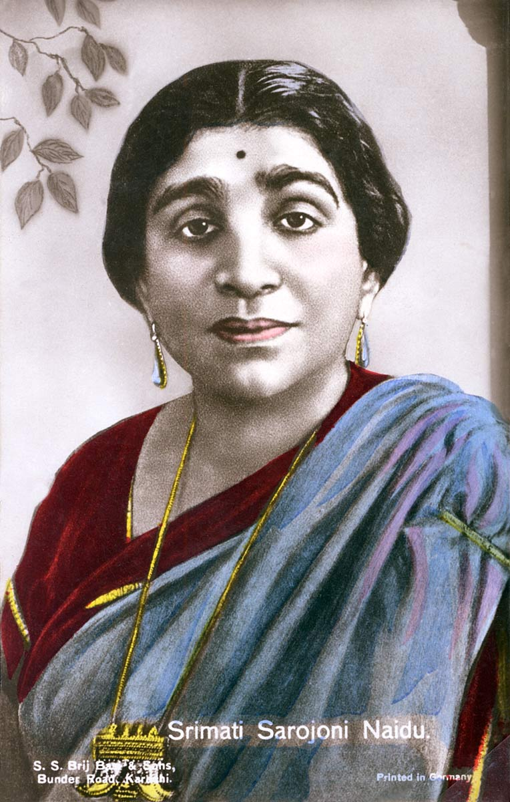
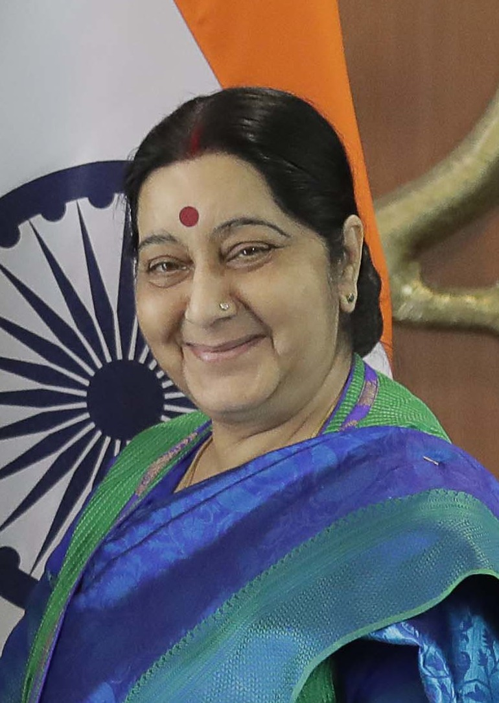
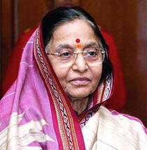
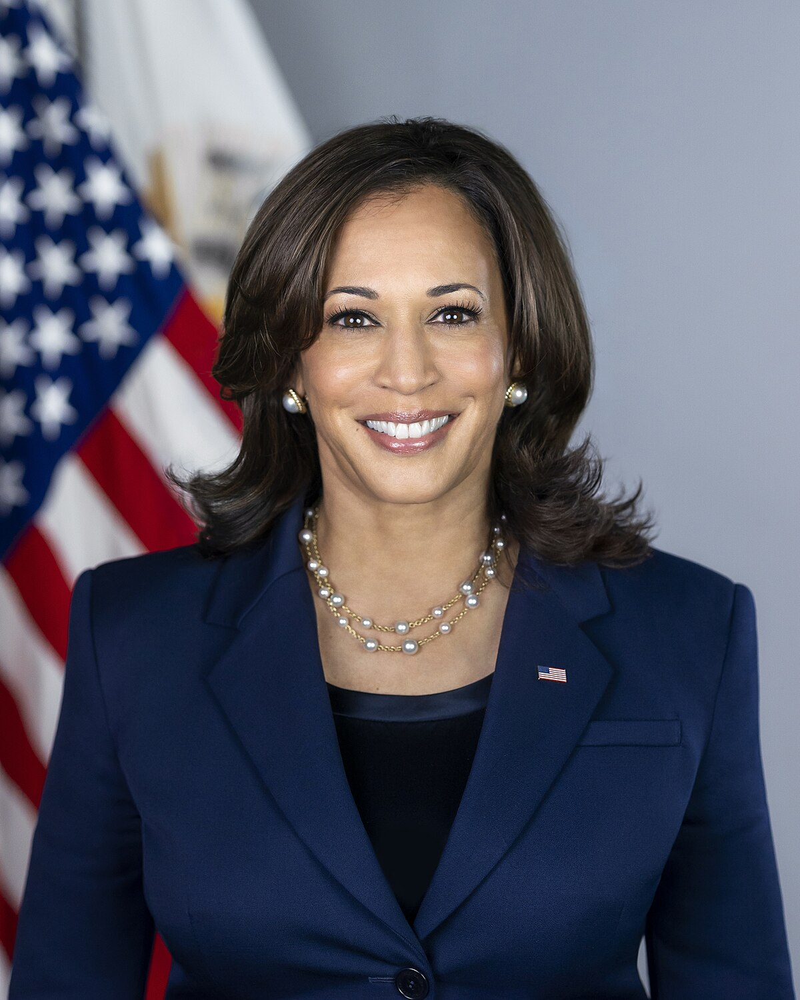
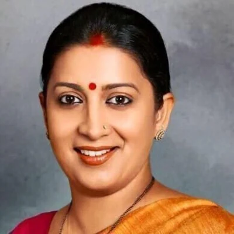

India’s first and only female Prime Minister:Indira Gandhi
- First Woman Prime Minister of India: – She became Prime Minister in 1966, breaking gender barriers in Indian and global politics.
- Voices of Power and ProgressFrom parliaments to presidencies, women are shaping laws and policies with vision and integrity.
- From the Margins to the MainstreamOnce sidelined, women now lead movements, ministries, and nations with strength and empathy.
- She Leads, We RiseWomen in politics pave the way for equity, justice, and inclusive growth for all.
Other Trailblazing Women in Politics

Sarojini Naidu
One of the first female political leaders in India’s independence movement. First woman to become the President of the Indian National Congress (1925) and later Governor of Uttar Pradesh.

Sushma Swaraj
Former External Affairs Minister of India (2014–2019). Known for her effective diplomacy and outreach on social media. First woman Chief Minister of Delhi.

Pratibha Patil
First woman President of India (2007–2012). Also served as Governor of Rajasthan and held various portfolios in Maharashtra

Margaret Thatcher
First female Prime Minister of the UK, known for her strong leadership during challenging times.

Kamala Harris
First female Vice President of the United States and the highest-ranking female official in U.S. history.

Smriti Irani
Union Minister for Women & Child Development. Known for her sharp political skills and speeches.
AOC (Alexandria Ocasio-Cortez)
U.S. Congresswoman known for her progressive politics and youth influence.